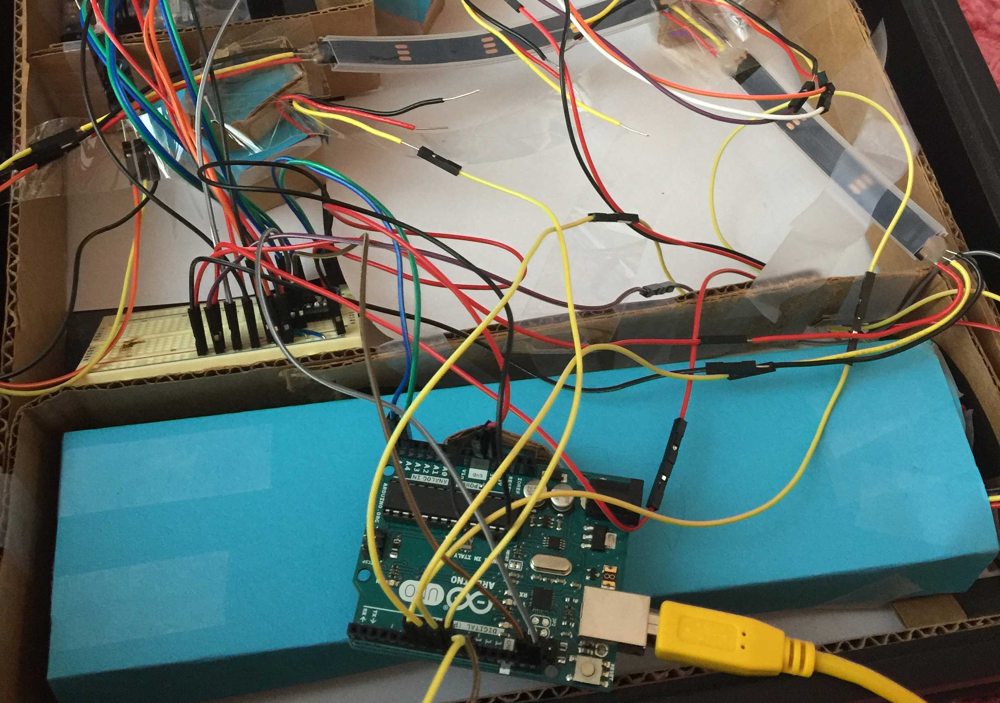

-
Mirror of Positivity
Mirrors are that one object that can create negative thoughts. I love the idea of putting postive sticky notes on the mirror as a reminder to think positive thoughts. So I thought why not create a digital experience based on that? I created this mirror using an Arduino, a PIR sensor, LED lights and 7 segment displays. It was very much a project where arts and crafts meets technolgy and I had a lot of fun putting it together.
-
Materials
Components
- 2 seven segment displays
- 1 alpha numeric display
- 1 strip of 30 Neopixel LEDs
- 1 PIR sensor
- Real time clock sensor
- 120 pack of jumper cables
- 1 Arduino UNO
Other Materials
- Cardboard
- Cardstock
- White Paper
- Tape
- 12x12 2 Way Acryllic
- 12x12 Shadow Box
Tools
- Soldering Iron
- Hot Glue Gun
- Die Cut Machine
Code Plan
A real time clock sensor will pull in the date and time data which will be displayed on the seven segment/aphanumeric displays. The tree LED lights will change color based on the time of day. The PIR sensor will activate LED lights that light up positove phrases at the bottom of the mirror
Psuedo Code
- Real time clock sensor gathers data
- Time is displayed on 7 segment display as 24 hour clock, with center colon blinking every second (format: hh:mm)
- Day of the week is displayed on the apha numeric display (format: it can show up to four letters so days of the week will display as MON, TUES, WED, THUR, FRI, SAT, SUN)
- Date is displayed on seven segment display with period after the month (format: mm.dd)
- Based on time of day the LEDs behind the tree design will chnage color as follows:
- 6am-7am: Pink
- 7am-8am: Red
- 8am-9am: Orange
- 9am-12pm: Yellow
- 12pm-3pm: Green
- 3pm-5pm: Yellow
- 5pm-6pm: Orange
- 6pm-7pm: Red
- 7pm-8pm: Pink
- 8pm-6am: Blue
- 3 butterflies are hard coded as pink, orange, and purple
- PIR sensor detects motions
- When sensor detects motion LEDs behind phrase 1 will turn on
- While sensor senses motion the phrase will display
- When sensor stops sensing motion the LEDs will turn off
- When sensor sesnse motion again it will turn on LEDs behind phrase 2
- While sensor senses motion the phrase will display
- When sensor stops sensing motion the LEDs will turn off
-
Testing the Concept
I started with a smaller shadow box and printer paper to see how the LED lights would shine through. I cut out simple icons using a die cut machine with black card stock. I segmented the sections using card board so the LED lights could light up a single icon at a time. The biggest takeaway from testing it was that while the card board worked well to segment the displays, the simple LED lights I had were not bright enough, and I would need more LEDs. The Neopixel strip was perfect because it meant I could have multiple LEDs using fewer pins to control them all.
-
Building the Project
I started this project by setting up all of the components and playing with them to make sure I understood how the code worked for each indivual component. The PIR sensor was the first one I connected. This sensor is very simple because it returns "HIGH" while it senses motion and "LOW" while it doesn't.
The next step was soldering all of the parts together. The LED strips needed to be soldered. The displays and the realtime clock needed to be soldered to their boards and the header pins needed to be soldered to the boards as well.
The next step was to test all of the soldered peices. I set up the displays to show the date time and the day of the week. The code for this can be found here.
The frame needed to be put together with the 2-way acryllic. I pulled the shadow box apart to be abe to put the two way acryllic right up against the glass and glued it all back together.
I created a design for the tree by sketching it out and tracing it into ilustrator with the pen tool. I created an svg file so I could cut out the lettering and tree design with a die cut machine.
The I put the inside of the frame together using cardboard to create housing for the LED lights that need to be segmented off.